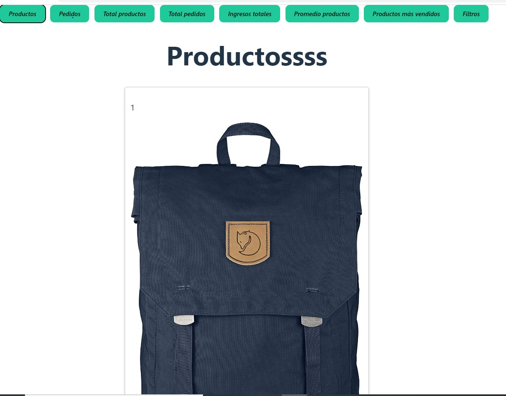
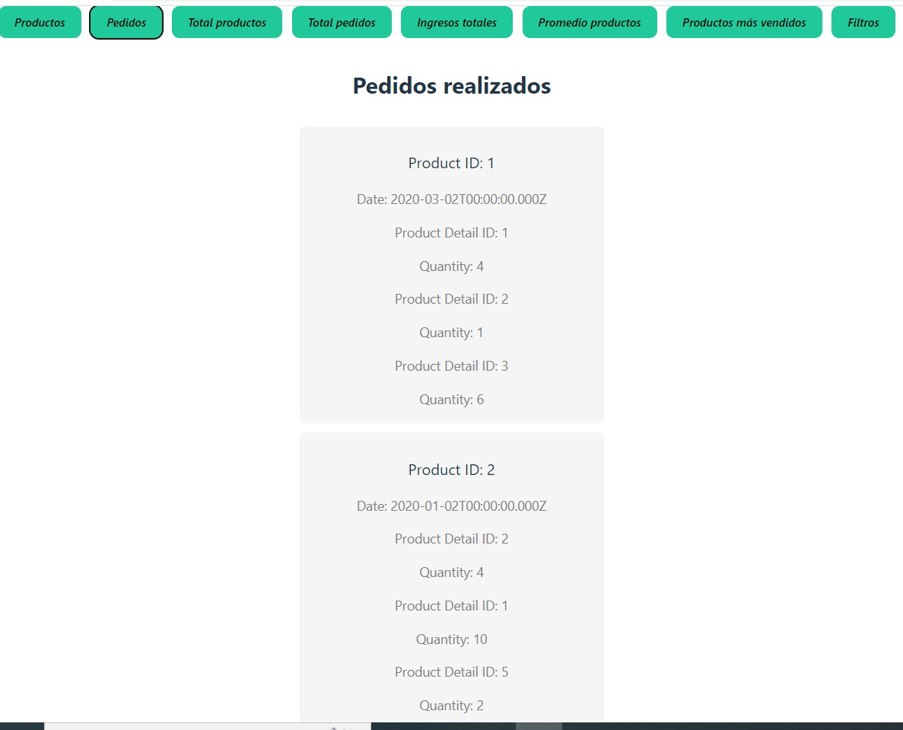
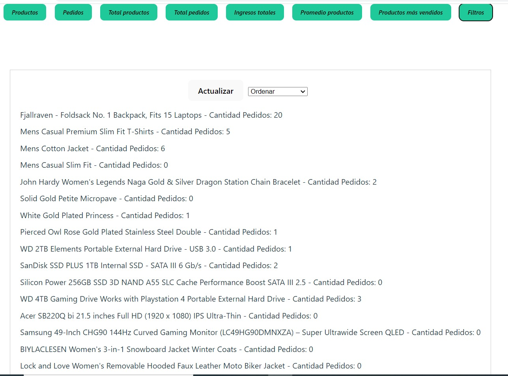

<div class="container mx-auto" style="max-width:100%;">


    <div class="contenedor">
        <div class="contenedor-cards">


            <div class="contenedor-card-item">
                <div class="contenedor-card-item-wrapper">
                    
                    <div class="contenedor-info">
                        <div class="info">
                            <p class="titulo">Desafio con AMCHAN REACT</p>

                        </div>
                        <div class="fondo"></div>
                    </div>
                </div>
            </div>

            <!-- Modal -->
            <div class="modal fade" id="AmpliarImagen3" tabindex="-1" aria-labelledby="modalLabel" aria-hidden="true">
                <div class="modal-dialog">
                    <div class="modal-content">
                        <div class="modal-header">
                            <h5>¡AMCHAN / REACT / Ultimo Desafío
                            </h5>
                            <button type="button" class="btn-close" data-bs-dismiss="modal" aria-label="Close"></button>

                        </div>
                        <div class="modal-body">

                            
                            


                            <p>Objetivo de este desafío es crear un panel de control basado en web que muestre diversas métricas de una tienda utilizando: React, una popular biblioteca de JavaScript para construir interfaces de usuario. El servicio de API
                                Fake Store, que proporciona datos ficticios para una tienda en línea. Requisitos Diseñar una interfaz de panel de control fácil de usar que muestre las siguientes métricas: Número total de productos en la tienda Número
                                total de pedidos realizados Ingresos totales generados Precio promedio de los productos Productos más vendidos (según el número de pedidos) Utilizar el servicio de API Fake Store para obtener los datos necesarios de las
                                métricas. Los puntos finales de la API que necesitarás son: /products : Obtiene todos los productos de la tienda /orders : Obtiene todos los pedidos realizados Puedes encontrar más información sobre la API en: Documentación
                                de Fake Store API Implementar los componentes de React necesarios para el panel de control:
                            </p>

                        </div>
                        <div class="modal-footer">
                            <a class="gif" href="https://github.com/Arlex296/UltimoDesafioReact">
                                

                            </a>
                            <button type="button" class="boton" data-bs-dismiss="modal">Salir</button>
                        </div>
                    </div>
                </div>
            </div>


        </div>
    </div>


</div>